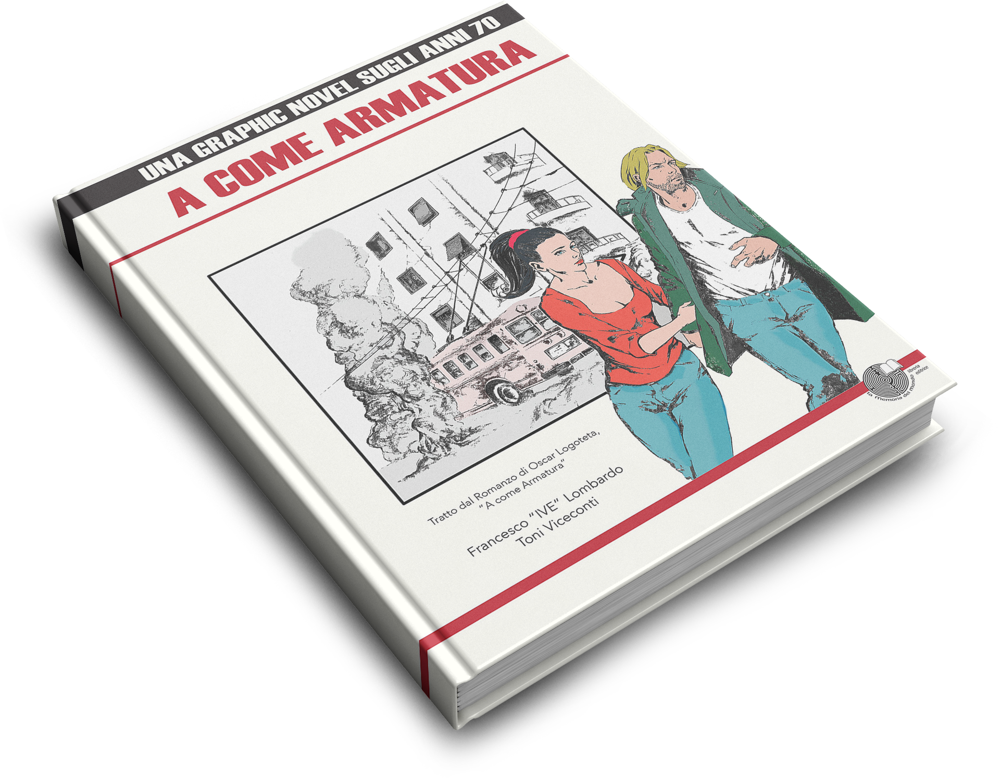

A come Armatura
"A come Armatura" racconta il percorso di Antonino Laganà (Nino), nel '77 sedicenne e della sua crescita tra il collettivo del liceo Berchet e gruppo scout Agesci e di come la sua vita sia cambiata in un pomeriggio di maggio del 1977, in via De Amicis a Milano. Attorno a Nino, ruotano le vicende di Domenico Basile – Mimmo, amico d'infanzia di Nino – di suo padre Saverio – operaio all'Alfa – di suo zio Carlo – professore a Reggio Calabria – e della bella Giorgia – compagna di Noviziato nel gruppo scout Borgolombardo 1.
La suggestione per la realizzazione di questo romanzo è nata grazia a una foto, quella che ritrae l'autonomo Giuseppe Memeo, in via De Amicis il 14 maggio 1977, con il busto caricato in avanti, le gambe divaricate, il volto coperto e le braccia tese con una P38 impugnata a due mani. Oltre a Giuseppe Memeo e altri trecento autonomi – Senza Tregua, Rosso e Casoretto – c'era anche un ragazzo, Maurizio Azzollini, all'epoca sedicenne e scout in un gruppo Agesci di Milano.
Gli anni 70, quando la Spada ha tagliato la testa a un'intera generazione
Nel 2016, ispirata dal romanzo, è nata la graphic novel di A come Armatura, con i disegni di Toni Viceconti e la scrittura di Francesco "IVE" Lombardo. Intorno a questo progetto sono nate diverse collaborazioni per la creazione di una vera e propria soundtrack che ha visti coinvolti diversi artisti della scena alternativa dell'hiphop milanese, come Mastino, Kabo, Kiave e molti altri. Tratti dalla soundtrack, ecco la traccia di Mastino, "Maggio del '74" e, di seguito, il video di Kabo, "Valzer 77".
È possibile acquistare sia il romanzo che la graphic novel di A come Armatura direttamente sul sito della casa editrice, La Memoria del Mondo Editrice.